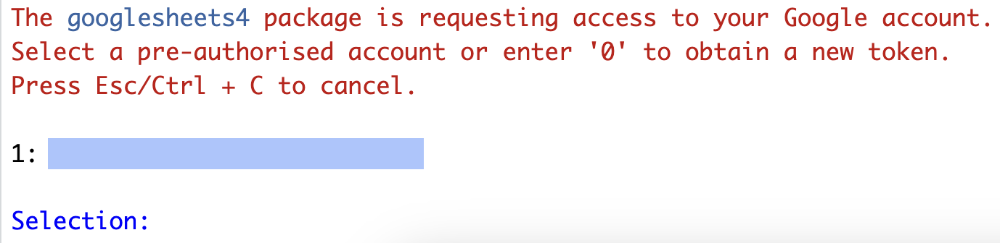

read.csv("heroes_information.csv")Warning in file(file, "rt"): cannot open file 'heroes_information.csv': No such
file or directoryError in file(file, "rt"): cannot open the connectionИ.С. Поздняков ![]()
Итак, пришло время перейти к реальным данным. Мы начнем с использования датасета (так мы будем называть любой набор данных) по супергероям. Этот датасет представляет собой табличку, каждая строка которой - отдельный супергерой, а столбик — какая-либо информация о нем. Например, цвет глаз, цвет волос, вселенная супергероя1, рост, вес, пол и так далее. Несложно заметить, что этот датасет идеально подходит под структуру датафрейма: прямоугольная табличка, внутри которой есть разные колонки, каждая из которой имеет свой тип (числовой или строковый).
Для начала скачайте файл по ссылке
Он, скорее всего, появился у вас в папке “Загрузки”. Если мы будем просто пытаться прочитать этот файл (например, с помощью read.csv() — мы к этой функцией очень скоро перейдем), указав его имя и разрешение, то наткнемся на такую ошибку:
read.csv("heroes_information.csv")Warning in file(file, "rt"): cannot open file 'heroes_information.csv': No such
file or directoryError in file(file, "rt"): cannot open the connectionЭто означает, что R не может найти нужный файл. Вообще-то мы даже не сказали, где искать. Нам нужно как-то совместить место, где R ищет загружаемые файлы и сами файлы. Для этого есть несколько способов.
Для этого нужно узнать, какая папка является рабочей с помощью функции getwd() (без аргументов), найти эту папку в проводнике и переместить туда файл. После этого можно использовать просто название файла с разрешением:
heroes <- read.csv("heroes_information.csv")Кроме того, путь к рабочей папке можно увидеть в RStudio во вкладке с консолью, в самой верхней части (прямо под надписью “Console”):

Можно просто сменить рабочую папку с помощью setwd() на ту, где сейчас лежит файл, прописав путь до этой папки. Теперь файл находится в рабочей папке:
heroes <- read.csv("heroes_information.csv")Этот вариант использовать не рекомендуется! Как минимум, это сразу делает невозможным запустить скрипт на другом компьютере. Ну а если все-таки вдруг повезет и получится, то ваш коллега будет очень недоволен, что ваш скрипт изменяет рабочую директорию.
heroes <- read.csv("/Users/Username/Some_Folder/heroes_information.csv")Этот вариант страдает теми же проблемами, что и предыдущий, поэтому тоже не рекомендуется!
Для пользователей Windows есть дополнительная сложность: знак
/является особым знаком для R, поэтому вместо него нужно использовать двойной//.
Во вкладке Environment справа в окне RStudio есть кнопка “Import Dataset”. Возможно, у Вас возникло непреодолимое желание отдохнуть от написания кода и понажимать кнопочки — сопротивляйтесь этому всеми силами, но не вините себя, если не сдержитесь.
Многие функции в R, предназначенные для чтения файлов, могут прочитать файл не только на Вашем компьютере, но и сразу из интернета. Для этого просто используйте ссылку вместо пути:
heroes <- read.csv("https://raw.githubusercontent.com/Pozdniakov/tidy_stats/master/data/heroes_information.csv")На первый взгляд это кажется чем-то очень сложным, но это не так. Это очень просто и ОЧЕНЬ удобно. При создании проекта создается отдельная папка, где у вас лежат данные, хранятся скрипты, вспомогательные файлы и отчеты. Кроме папки создается файл формата .Rproj, в котором хранятся настройки проекта. Если нужно вернуться к другому проекту — просто открываете другой проект, с другими файлами и скриптами. Можно даже иметь открытыми несколько окон RStudio таким образом. Это еще помогает не пересекаться переменным из разных проектов — а то, знаете, использование двух переменных data в разных скриптах чревато ошибками. Поэтому очень удобным решением будет выделение отдельного проекта под этот курс.
При закрытии проекта все переменные по умолчанию тоже будут сохраняться, а при открытии — восстанавливаться (а вот пакеты все равно придется подгружать заново). Это очень удобно, хотя некоторые рекомендуют от этого отказаться. Это можно сделать во вкладке
Tool - Global Options...
Даже если не пользоваться проектами RStudio (но я настоятельно рекомендую, это очень удобно), то все равно имеет смысл разделять различные свои проекты по отдельным папкам. Для небольших проектов этого уже может быть достаточно, но я рекомендую делать немного более сложную структуру папок внутри проекта. Например, такую:
.
└── my_project
├── R
├── data
│ ├── raw
│ ├── temp
│ └── processed
├── figures
├── main_script.R
├── my_project.Rproj
├── output
└── README.txtВ основной папке содержится автоматически созданный RStudio файл .Rproj, основной скрипт с формат .R (или же это может быть .Rmd файл — см. @ref(rmd)). Вспомогательные скрипты (например, с функциями) могут храниться в папке R. Если скриптов несколько, то их порядок стоит обозначить числами:
.
├── 01_first_script_preposcessing.R
├── 02_second_script_statistics.R
└── 03_third_script_figures.R Данные стоит держать в отдельной папке, причем в некоторых ситуациях вы захотите создать отдельные подпапки, например, отдельные подпапки для данных на входе, временных файлов и данных на выходе. Результаты работы, например, отчеты, сгенерированные с помощью R Markdown или Quarto (см. Глава 16). Туда же можно поместить папку с графиками или же можно поместить эту папку в корневую директорию.
Это лишь пример структуры организации проектов, детали могут различаться, но такая структура позволит не заблудиться в собственных файлах, если тех накопилось достаточно много. Кроме того, другому человеку в такой структуре проекта будет разобраться значительно проще
При создании папок внутри основного проекта важно помнить о том, что теперь ваши файлы больше нельзя найти в вашей корневой директории: нужно искать их в соответствующих папках. Это значит, что путь до файла теперь будет не "heroes_information.csv", а "data/heroes_information.csv" или даже "data/raw/heroes_information.csv".
Сами скрипты тоже лучше разделять на смысловые части. Для этого есть горячие клавиши Cmd + Shift + R. Это сочетание клавиш выведет окно, в котором вам нужно вписать название, после чего появится вот такой аккуратный комментарий:
# Meaningful part of the script -------------------------------------------Разделенный на такие части скрипт (да еще и с подробными комментариями) гораздо удобнее читать!
Как вы уже поняли, импорт данных - одна из самых муторных и неприятных вещей в R. Если у вас получится с этим справится, то все остальное - ерунда. Мы уже разобрались с первой частью этого процесса - нахождением файла с данными, осталось научиться их читать.
Здесь стоит сделать небольшую ремарку. Довольно часто данные представляют собой табличку. Или же их можно свести к табличке. Такая табличка, как мы уже выяснили, удобно репрезентируется в виде датафрейма. Но как эти данные хранятся на компьютере? Есть два варианта: в бинарном и в текстовом файле.
Текстовый файл означает, что такой файл можно открыть в программе Блокнот или его аналоге (например, TextEdit на macOS) и увидеть напечатанный текст: скрипт, роман или упорядоченный набор цифр и букв. Нас сейчас интересует именно последний случай. Таблица может быть представлена как текст: отдельные строчки в файле будут разделять разные строчки таблицы, а какой-нибудь знак-разделитель отделять колонки друг от друга.
Для чтения данных из текстового файла есть довольно удобная функция read.table(). Почитайте хэлп по ней и ужаснитесь: столько разных параметров на входе! Но там же вы увидите функции read.csv(), read.csv2() и некоторые другие — по сути, это тот же read.table(), но с другими параметрами по умолчанию, соответствующие формату файла, который мы загружаем. В данном случае используется формат .csv, что означает “Comma Separated Values” (Значения, Разделенные Запятыми). Формат .csv — это самый известный способ хранения табличных данных в файле на сегодняшний день. Файлы с расширением .csv можно легко открыть в любой программе, работающей с таблицами, в том числе Microsoft Excel и его аналогах.
Файл с расширением .csv — это просто текстовый файл, в котором “закодирована” таблица: разные строчки разделяют разные строчки таблицы, а столбцы отделяются запятыми (отсюда и название). Вы можете вручную создать такие файлы в Блокноте и сохранять их с форматом .csv - и такая табличка будет нормально открываться в Microsoft Excel и других программах для работы с таблицами. Можете попробовать это сделать самостоятельно!
Как говорилось ранее, в качестве разделителя ячеек по горизонтали — то есть разделителя между столбцами — используется запятая. С этим связана одна проблема: в некоторых странах (в т.ч. и России) принято использовать запятую для разделения дробной части числа, а не точку, как это делается в большинстве стран мира. Поэтому есть альтернативный вариант формата .csv, где значения разделены точкой с запятой (;), а дробные значения - запятой (,). В этом и различие функций read.csv() и read.csv2() — первая функция предназначена для “международного” формата, вторая - для (условно) “российского”. Оба варианта формата имеют расширение .csv, поэтому заранее понять какой именно будет вариант довольно сложно, приходится либо пробовать оба, либо заранее открывать файл в текстовом редакторе.
В первой строчке обычно содержатся названия столбцов - и это чертовски удобно, функции read.csv() и read.csv2() по умолчанию считают первую строчку именно как название для колонок.
Кроме .csv формата есть и другие варианты хранения таблиц в виде текста. Например, .tsv — тоже самое, что и .csv, но разделитель - знак табуляции. Для чтения таких файлов есть функция read.delim() и read.delim2(). Впрочем, даже если бы ее и не было, можно было бы просто подобрать нужные параметры для функции read.table(). Есть даже функции, которые пытаются сами “угадать” нужные параметры для чтения — часто они справляются с этим довольно удачно. Но не всегда. Поэтому стоит научиться справляться с любого рода данными на входе.
Итак, прочитаем наш файл. Для этого используем только параметр file =, который идет первым:
heroes <- read.csv("data/heroes_information.csv")Можете проверить с помощью View(heroes): все работает! Если же вылезает какая-то странная ерунда или же просто ошибка - попробуйте другие функции (read.table(), read.delim()) и покопаться с параметрами. Для этого читайте Help.
При импорте данных обратите внимания на предупреждения (если таковые появляются), в большинстве случаев они указывают на то, что данные импортированы некорректно.
Проверим, что все прочиталось нормально с помощью уже известной нам функции str():
str(heroes)'data.frame': 734 obs. of 11 variables:
$ X : int 0 1 2 3 4 5 6 7 8 9 ...
$ name : chr "A-Bomb" "Abe Sapien" "Abin Sur" "Abomination" ...
$ Gender : chr "Male" "Male" "Male" "Male" ...
$ Eye.color : chr "yellow" "blue" "blue" "green" ...
$ Race : chr "Human" "Icthyo Sapien" "Ungaran" "Human / Radiation" ...
$ Hair.color: chr "No Hair" "No Hair" "No Hair" "No Hair" ...
$ Height : num 203 191 185 203 -99 193 -99 185 173 178 ...
$ Publisher : chr "Marvel Comics" "Dark Horse Comics" "DC Comics" "Marvel Comics" ...
$ Skin.color: chr "-" "blue" "red" "-" ...
$ Alignment : chr "good" "good" "good" "bad" ...
$ Weight : int 441 65 90 441 -99 122 -99 88 61 81 ...На что нужно обращать внимание?
Прочитаны ли пропущенные значения как NA. По умолчанию пропущенные значения обозначаются пропущенной строчкой или "NA", но встречаются самые разнообразные варианты. Возможные варианты кодирования пропущенных значений можно задать в параметре na.strings = функции read.table() и ее вариантов. В нашем наборе данных как раз такая ситуация, где нужно самостоятельно задавать, какие значения будут прочитаны как NA.
heroes <- read.csv("https://raw.githubusercontent.com/Pozdniakov/tidy_stats/master/data/heroes_information.csv",
na.strings = c("NA", "-", "-99"))Прочитаны ли те столбики, которые должны быть числовыми, как int или num. Если в колонке содержатся числа, а написано chr (= "character") или Factor (в случае если stringsAsFactors = TRUE), то, скорее всего, одна из строчек содержит в себе нечисловые знаки, которые не были прочитаны как NA.
Странные названия колонок. Это может случиться по самым разным причинам, но в таких случаях стоит открывать файл в другой программе и смотреть первые строчки. Например, может оказаться, что первые несколько строчек — пустые или что первая строчка не содержит название столбцов (тогда для параметра header = нужно поставить FALSE)
Вместо строковых данных у вас кракозябры. Это означает проблемы с кодировкой. В первую очередь попробуйте выставить значение "UTF-8" для параметра encoding = в функции для чтения файла:
heroes <- read.csv("data/heroes_information.csv",
encoding = "UTF-8")В случае если это не помогает, попробуйте разобрать, что это за кодировка.
Все прочиталось как одна колонка. В этом случае, скорее всего, неправильно подобран разделить колонок — параметр sep =. Откройте файл в текстовом редакторе, чтобы понять какой нужно использовать.
В отдельных строчках все прочиталось как одна колонка, а в остальных нормально. Скорее всего, в файле есть значения типа \ или ", которые в функциях read.csv(), read.delim(), read.csv2(), read.delim2() читаются как символы для закавычивания значений. Это может понадобиться, если у вас в таблице есть строковые значения со знаками , или ;, которые могут восприниматься как разделитель столбцов.
Появились какие-то новые числовые колонки. Возможно неправильно поставлен разделитель дробной части. Обычно это либо . (read.table(), read.csv(), read.delim()), либо , (read.csv2(), read.delim2()).
Конкретно в нашем случае все прочиталось хорошо с помощью функции read.csv(), но в строковых переменных есть много прочерков, которые обозначают отсутствие информации по данному параметру супергероя, т.е. пропущенное значение. А вот с числовыми значениями все не так просто: для всех супергероев прописано какое-то число, но во многих случаях это -99. Очевидно, отрицательного роста и массы не бывает, это просто обозначение пропущенных значений (такое иногда используется). Таким образом, чтобы адекватно прочитать файл, нам нужно поменять параметр na.strings = функции read.csv():
heroes <- read.csv("data/heroes_information.csv",
na.strings = c("NA", "-", "-99"))Представим, что вы хотите сохранить табличку с данными про супергероев из вселенной DC в виде отдельного файла .csv.
dc <- heroes[heroes$Publisher == "DC Comics",]Функция write.csv() позволит записать датафрейм в файл формата .csv:
write.csv(dc, "data/dc_heroes_information.csv")Обычно названия строк не используются, и их лучше не записывать, поставив для row.names = значение FALSE:
write.csv(dc, "data/dc_heroes_information.csv", row.names = FALSE)По аналогии с read.csv2(), write.csv2() позволит записать файлы формата .csv с разделителем ;.
write.csv2(dc, "data/dc_heroes_information.csv", row.names = FALSE)Тем не менее, далеко не всегда таблицы представлены в виде текстового файла. Самый распространенный пример таблицы в бинарном виде — родные форматы Microsoft Excel. Если Вы попробуете открыть .xlsx файл в Блокноте, то увидите кракозябры. Это делает работу с этим файлами гораздо менее удобной, поэтому стоит избегать экселевских форматов и стараться все сохранять в .csv.
Такие файлы не получится прочитать при помощи базового инструментария R. Тем не менее, для чтения таких файлов есть много дополнительных пакетов:
файлы Microsoft Excel: лучше всего справляется пакет readxl (является частью расширенного tidyverse), у него есть много альтернатив (xlsx, openxlsx).
файлы SPSS, SAS, Stata: существуют два основных пакета — haven (часть расширенного tidyverse) и foreign.
Что такое пакеты и как их устанавливать мы изучим очень скоро.
Все чаще “кнопочная” работа с данными переезжает из Excel в облачный Google Sheets, который обладает схожим интерфейсом и функционалом, но позволяет удобно работать нескольким пользователям одновременно.
Оттуда данные можно легко выгрузить в нужном формате. Конечно, и в .csv тоже. Но было бы удобно загружать данные из Google Sheets напрямую, по ссылке. И это вполне возможно и даже не очень трудно! Лучший пакет для этого – googlesheets4.
install.packages("googlesheets")Основная функция – read_sheet(), в ней нужно прописать ссылку, которую можно получить в “Настройках доступа” (или которую вам уже прислали).
heroes_form_gsh <- googlesheets4::read_sheet("https://docs.google.com/spreadsheets/d/1JnkftX8H2n383V6wFBTKBqiMmj79hravsYcSeClSeo8/edit?usp=sharing")После этого в консоли нужно будет выбрать Google-аккаунт:

Выбираете (в данном случае у меня только один аккаунт, поэтому пишу 1 и жму Enter).
После этого откроется окно в веб-браузере, в котором Google будет спрашивать, доверяете ли вы R и готовы ли дать ему доступ к чтению таблицы (разумеется, отвечаем, что да). Это нужно будет сделать всего один раз, так что в дальнейшем нажимать в веб-браузере ничего будет не нужно.
После этого таблица загрузится.
Чтение табличных данных обычно происходит очень быстро. По крайней мере, до тех пор пока ваши данные не содержат очень много значений. Если вы попробуете прочитать с помощью read.csv() таблицу с миллионами строчками, то заметите, что это происходит довольно медленно. Впрочем, эта проблема эффективно решается дополнительными пакетами.
readr (часть базового tidyverse) предлагает функции, очень похожие на стандартные read.csv(), read.csv2() и тому подобные, только в названиях используется нижнее подчеркивание: read_csv() и read_csv2(). Они быстрее и немного удобнее, особенно если вы работаете в tidyverse.readr::read_csv("data/heroes_information.csv",
na = c("-", "-99"))New names:
• `` -> `...1`Warning: One or more parsing issues, call `problems()` on your data frame for details,
e.g.:
dat <- vroom(...)
problems(dat)Rows: 734 Columns: 11
── Column specification ────────────────────────────────────────────────────────
Delimiter: ","
chr (8): name, Gender, Eye color, Race, Hair color, Publisher, Skin color, A...
dbl (3): ...1, Height, Weight
ℹ Use `spec()` to retrieve the full column specification for this data.
ℹ Specify the column types or set `show_col_types = FALSE` to quiet this message.# A tibble: 734 × 11
...1 name Gender `Eye color` Race `Hair color` Height Publisher
<dbl> <chr> <chr> <chr> <chr> <chr> <dbl> <chr>
1 0 A-Bomb Male yellow Human No Hair 203 Marvel C…
2 1 Abe Sapien Male blue Icthyo … No Hair 191 Dark Hor…
3 2 Abin Sur Male blue Ungaran No Hair 185 DC Comics
4 3 Abomination Male green Human /… No Hair 203 Marvel C…
5 4 Abraxas Male blue Cosmic … Black NA Marvel C…
6 5 Absorbing Man Male blue Human No Hair 193 Marvel C…
7 6 Adam Monroe Male blue <NA> Blond NA NBC - He…
8 7 Adam Strange Male blue Human Blond 185 DC Comics
9 8 Agent 13 Female blue <NA> Blond 173 Marvel C…
10 9 Agent Bob Male brown Human Brown 178 Marvel C…
# ℹ 724 more rows
# ℹ 3 more variables: `Skin color` <chr>, Alignment <chr>, Weight <dbl>vroom - это часть расширенного tidyverse. Это такая альтернатива readr из того же tidyverse, но еще быстрее (отсюда и название).vroom::vroom("data/heroes_information.csv")New names:
Rows: 734 Columns: 11
── Column specification
──────────────────────────────────────────────────────── Delimiter: "," chr
(8): name, Gender, Eye color, Race, Hair color, Publisher, Skin color, A... dbl
(3): ...1, Height, Weight
ℹ Use `spec()` to retrieve the full column specification for this data. ℹ
Specify the column types or set `show_col_types = FALSE` to quiet this message.
• `` -> `...1`# A tibble: 734 × 11
...1 name Gender `Eye color` Race `Hair color` Height Publisher
<dbl> <chr> <chr> <chr> <chr> <chr> <dbl> <chr>
1 0 A-Bomb Male yellow Human No Hair 203 Marvel C…
2 1 Abe Sapien Male blue Icthyo … No Hair 191 Dark Hor…
3 2 Abin Sur Male blue Ungaran No Hair 185 DC Comics
4 3 Abomination Male green Human /… No Hair 203 Marvel C…
5 4 Abraxas Male blue Cosmic … Black -99 Marvel C…
6 5 Absorbing Man Male blue Human No Hair 193 Marvel C…
7 6 Adam Monroe Male blue - Blond -99 NBC - He…
8 7 Adam Strange Male blue Human Blond 185 DC Comics
9 8 Agent 13 Female blue - Blond 173 Marvel C…
10 9 Agent Bob Male brown Human Brown 178 Marvel C…
# ℹ 724 more rows
# ℹ 3 more variables: `Skin color` <chr>, Alignment <chr>, Weight <dbl>data.table - это не просто пакет, а целый фреймворк для работы с R, основной конкурент tidyverse. Одна из основных фишек data.table - быстрота работы. Это касается не только процессинга данных, но и их загрузки и записи. Поэтому некоторые используют функции data.table для чтения и записи данных в отдельности от всего остального пакета - они даже и называются соответствующе: fread() и fwrite(), где f означет fast2.data.table::fread("data/heroes_information.csv") V1 name Gender Eye color Race Hair color
1: 0 A-Bomb Male yellow Human No Hair
2: 1 Abe Sapien Male blue Icthyo Sapien No Hair
3: 2 Abin Sur Male blue Ungaran No Hair
4: 3 Abomination Male green Human / Radiation No Hair
5: 4 Abraxas Male blue Cosmic Entity Black
---
730: 729 Yellowjacket II Female blue Human Strawberry Blond
731: 730 Ymir Male white Frost Giant No Hair
732: 731 Yoda Male brown Yoda's species White
733: 732 Zatanna Female blue Human Black
734: 733 Zoom Male red - Brown
Height Publisher Skin color Alignment Weight
1: 203.0 Marvel Comics - good 441
2: 191.0 Dark Horse Comics blue good 65
3: 185.0 DC Comics red good 90
4: 203.0 Marvel Comics - bad 441
5: -99.0 Marvel Comics - bad -99
---
730: 165.0 Marvel Comics - good 52
731: 304.8 Marvel Comics white good -99
732: 66.0 George Lucas green good 17
733: 170.0 DC Comics - good 57
734: 185.0 DC Comics - bad 81Чем же пользоваться среди всего этого многообразия? Бенчмарки3 показывают, что быстрее всех vroom и data.table. Если же у вас нет задачи ускорить работу кода на несколько миллисекунд или прочитать датасет на много миллионов строк, то стандартного read.csv() (если вы работаете в базовом R) и readr::read_csv() (если вы работаете в tidyverse) должно быть достаточно.
Все перечисленные пакеты повзоляют не только быстро импортировать данные, но и быстро (и удобно!) экспортировать их:
readr::write_csv(dc, "data/dc_heroes_information.csv")
readr::write_excel_csv(dc, "data/dc_heroes_information.csv") #Если в Excel возникают проблемы с кодировками при открытии созданного .csv файла, то эта функция решает эти проблемы
vroom::vroom_write(dc, "data/dc_heroes_information.csv", delim = ",")
data.table::fwrite(dc, "data/dc_heroes_information.csv")В плане скорости записи файлов соотношение сил примерно такое же, как и для чтения: vroom и data.table обгоняют всех, затем идет readr, и только после него - базовые функции R.
супергерои в комиксах, фильмах и телесериалах часто взаимодействуют друг с другом, однако обычно это взаимодействие происходит между супергероями одного издателя. Два крупнейших издателя комиксов — DC и Marvel, поэтому принято говорить о вселенной DC и Marvel.↩︎
А еще friendly: fread() обычно самостоятельно хорошо угадывает формат таблицы на входе. vroom тоже так умеет.↩︎
бенчмаркинг — это тест производительности, в данном случае — сравнение скорости работы конкурирующих пакетов.↩︎